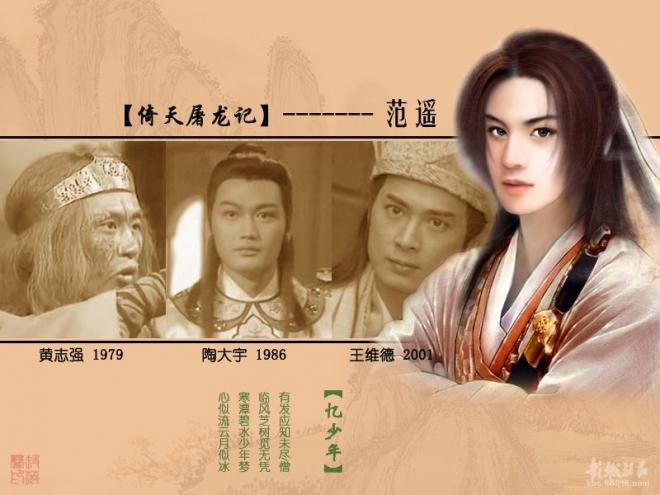
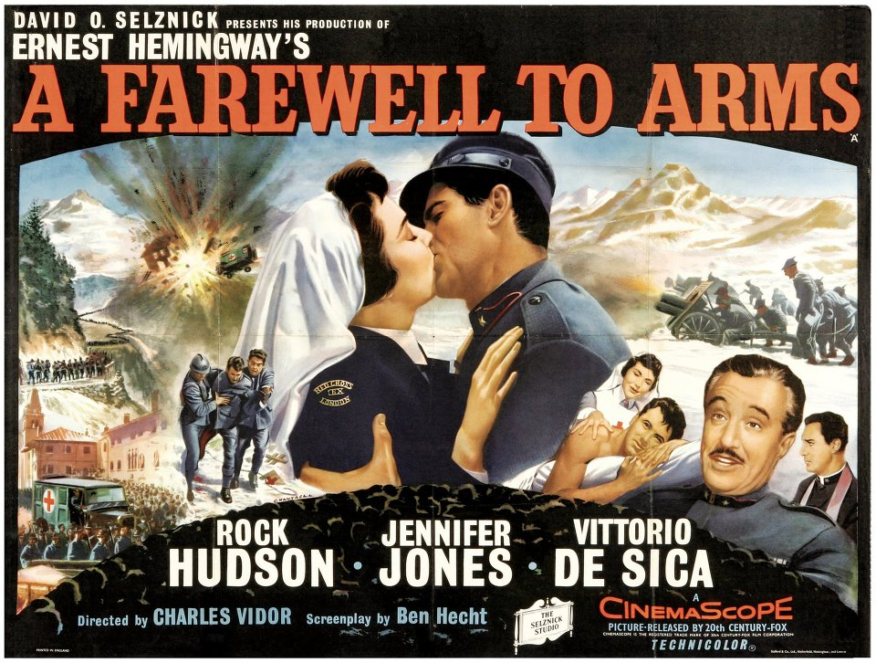
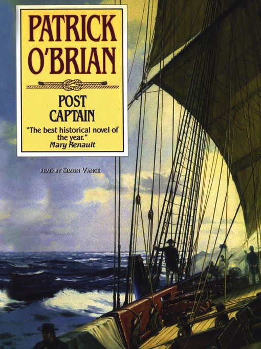
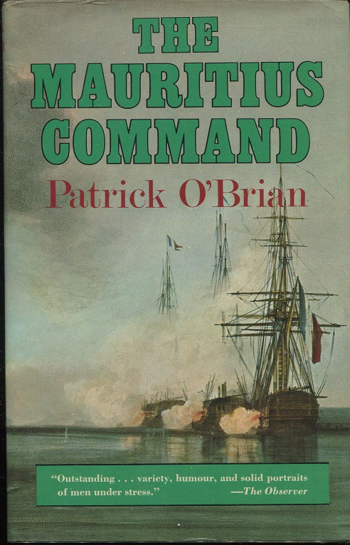
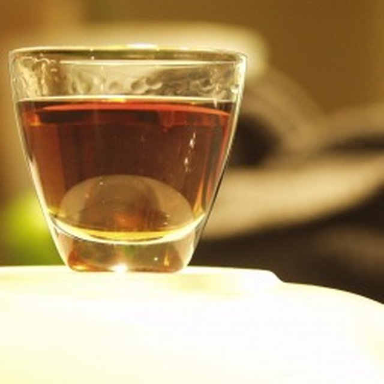
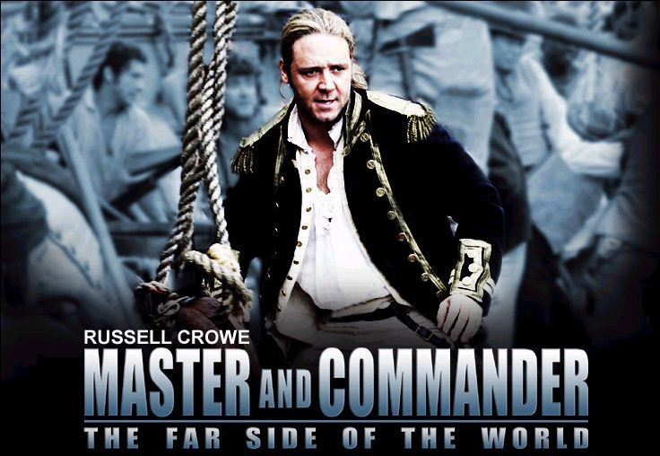
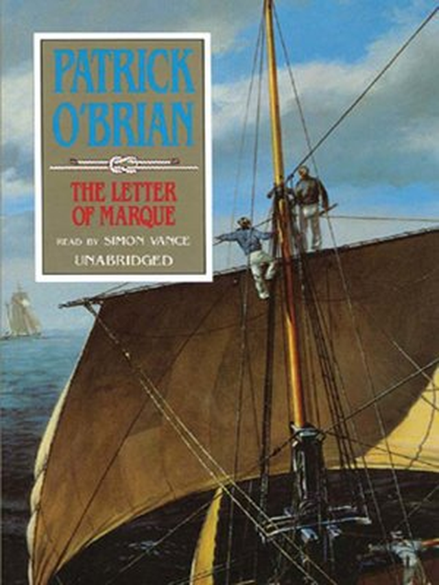
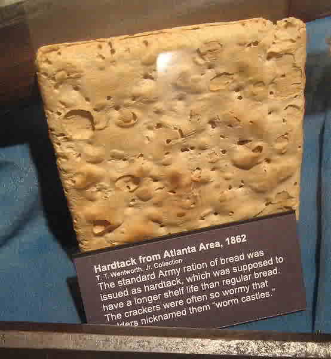
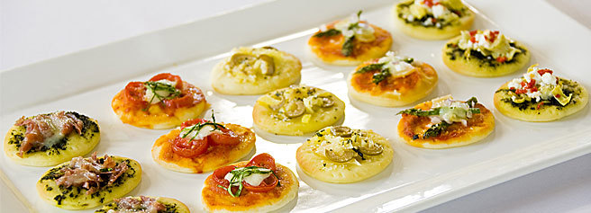

오브리(Aubrey) 함장이 안주빨 세우는 이야기
게시: 2018-10-25T06:30:00+09:00
저처럼 술을 잘 못 마시는 사람도, 술집에 가면 배불리 먹고 나옵니다. 바로 안주 때문이지요. 소주로 대표되는 우리나라의 술 문화는 싸구려 소주 때문에 별다른 문화가 발달하지 못했다고들 하지만, 사실 술 안주 문화는 상당히 발달된 편이지요. 우리나라 뿐만 아니라 중국도 술은 푸짐한 안주와 함께 먹는 것이 당연한 듯 합니다.

(양소와 함께 명교 2대 꽃미남 중 하나였던 범요)
의천도룡기 by 신필 김용 (배경 : 원나라 말기) ----------------
조민이 앞장서 객점에서 다섯 집 건너에 위치한 작은 주막으로 들어갔다. 주막 안에는 드문드문 몇 개의 식탁이 놓여 있을 뿐 초라했다. 밤이 깊은 탓인지 손님이 전혀 없었다. 조민과 장무기는 식탁을 가운데 두고 마주 앉았다. 범요는 손짓으로서 자기는 밖에서 기다리겠다고 했다. 조민은 알았다고 고개를 끄덕이더니, 간단한 요리 두 접시와 백주 두 병을 시켰다. 술이 세 순배 돌자 조민은 나직하게 물었다.
"장공자, 당신은 내가 누군지 이젠 알고 있겠죠?"
장무기는 솔직하게 대답했다.
"여양왕부의 군주라는 것을 알았소."
----------------------------------------------------------------------
그에 비해서, 서양의 술 안주 문화는 좀 빈약해 보입니다. 제가 본 문학 작품 중 술 안주를 가장 맛깔나게 묘사한 것은 헤밍웨이의 '무기여 잘 있거라'로 기억합니다. 주인공 헨리가 캐더린을 데리고 스위스로 도망친 뒤, 가끔 캐더린이 병원에 간 사이에 맥주집에서 맥주를 마시며, 소금을 친 크래커를 먹는 장면이 나오지요. 그때 주인공이 시원하게 맥주를 마시면서, 짭짤한 크래커에 의해 맥주 맛이 더 좋아지는 것을 느끼는 부분은 저처럼 술 잘 못마시는 사람에게도 입맛을 다시게 만듭니다. 헤밍웨이가 아무리 맛깔나게 묘사를 하긴 했지만, 그래도 안주가 고작 크래커라고 하면 초라하게 느껴지는 것은 어쩔 수 없습니다. 그나마, 서양 문학을 아무리 뒤져보아도, 이 이상의 안주가 나오는 구문은 찾아보기 힘들지요.

제가 카투사로 군에 갔을 때, 카투사 교관이 미군들의 행태(?)에 대해 설명하면서 설명한 것 중 하나가 미군의 술 문화에 대한 것입니다. 그 중 하나가 바로 '걔들은 안주를 안 먹어'라는 것이었지요. 즉, 미군애들은 안주에 대한 개념 자체가 거의 없다는 것입니다. '왜 비싼 돈을 내고 굳이 요리를 먹어야 하느냐 ? 그럴 돈 있으면 술을 한잔 더 마시지' 하는 것이 그들의 생각이라고 합니다. 그래도 걔들도 땅콩이나 크래커 같은 것을 조금씩 집어 먹기는 합니다. 아마 지금도 그렇겠지만, 그래도 술안주를 시킨다면 프링글즈 감자칩이 아주 인기 있었는데, 그나마도 안 시키는 족속들이 많았습니다.
왜 서양은 안주 문화가 이렇게 발달하지 못했을까요 ? (항상 그렇지만) 저도 잘 모릅니다. 하지만 제가 이 나폴레옹 시리즈들을 읽으면서 눈치를 보니, 유럽인들은 술을 따로 마신다기 보다도, 주로 식사를 하면서 술을 마시기 때문에, 따로 안주가 필요없었기 때문이 아닐까 합니다.

Post Captain by Patrick O'Biran (배경 : 1803년 영국 군함 Polycrest 호 함상) -----------------------------
작은 대구 요리 뒤에는 자고새가 나왔는데, 잭은 이 새 요리를 각 손님의 접시에 한마리씩 올려놓으며 분배했다. 클라레 포도주 기운이 돌기 시작하면서 흥겨움이 돋아났고, 대화도 잘 흘러갔다. 갑판 위의 견시병에게도 함장실에서 꾸준히 이어지는 웃음소리가 들려왔다.
자고새 요리뒤에는 4종류의 사냥 고기가 올라왔고, 그 절정은 (잭의 급사인) 킬릭과 장교 식당 급사 한명이, 고기즙이 흘러내리도록 둥근 홈을 파놓은 잘 닦은 갑판 해치 위에 얹어서 들고온 사슴 고기 덩어리였다.
"부르군디 포도주를, 킬릭." 잭은 사슴 고기를 자르기 위해 일어서며 중얼거렸다. 손님들은 그가 고기를 자르며 애쓰는 것을 보느라 대화도 점차 잦아들었고, 고기가 각자의 접시에 놓여지자 모두들 잭처럼 열심히 고기를 썰어 먹었다.
"신사 여러분," 캐닝은 그의 나이프와 포크를 내려놓으며 말했다. "정말 해군 여러분은 잘 지내시는군요 - 정말 훌륭한 오찬입니다 ! 맨션 가도 여기에 비하면 초라해 보입니다. 오브리 함장님, 이 사슴 요리는 제가 평생 먹은 것 중 정말 최고입니다. 정말 훌륭한 요리군요. 게다가 이 부르군디 포도주는 어찌나 훌륭한지 ! 뮤지니(Musigny)인 것 같습니다만 ?"
"샹볼-뮤지니(Chambolles-Musigny)입니다. 85년 산이지요. 맛이 가장 좋을 때를 약간 지난 것 같아 아쉽긴 합니다. 이 포도주는 몇 병 남지 않았습니다만, 다행히도 제 급사가 부르군디는 별로 좋아하질 않아서요."
------------------------------------------------------------------------------------------------------------------------
이렇게 손님을 초대한 식사에서 손님을 잘 접대했다는 소리를 듣기 위해서는 요리도 무척 중요했지만, 술도 대단히 중요했습니다. 대개 식사에는 와인을 곁들였습니다. 그러다보니 와인에 안주가 딸려나올 이유가 없었던 것이지요. 맥주나 사과주(Cider) 같은 것은 싸구려 술로 구분되었으므로, 이런 정찬에는 절대 내놓지 않았고, 브랜디 같은 독한 증류주는 식사가 다 끝난 뒤에, 기호에 따라 담배와 함께 아주 약간 마시는 것이 보통이었습니다. 브랜디는 100% 프랑스 산이었으므로, 특히 나폴레옹 전쟁 시기의 영국인들은 브랜디 대신 포도주치고는 독한 편인 포트 와인(Port wine)을 마셨습니다. 위스키는 아직 영국 사회에서 인기를 끌기 전이었고, 진(gin)은 하층민들이나 마시는 독주라는 인상이 강하게 남아 있던 시절이었지요. (포트 와인에 대해서는 머나먼 항해를 위한 물과 술 이야기 참조) 사정이 그렇다보니, 무슨 사정이건 간에 좋은 와인이 없으면 아예 손님 초대가 불가능했습니다.
이렇게 식사를 하면서 곁들이는 포도주는 양도 상당히 많았습니다. 대략 1인당 1병 정도씩은 마셨고, 어떤 경우는 2병까지 마시기도 했습니다. 중요한 손님들 모시고 한창 기분 좋게 마시는 중에 와인이 떨어졌다고 하면 그 망신은 수습 불가였지요. 위 소설에서 이어집니다.
---------------------------------------------------------------------------------------------------------------------
잭은 선임 사관과, 당직 사관, 그리고 당직 미드쉽맨(midshipman), 그리고 군목을 오찬에 초대한 뒤, 갑판 위를 계속 걸었다.
(중략)
...
"싫은데요." 킬릭이 말했다.
"군함의 수병인 자네가 지금 무섭다고 말하는 건 설마 아니겠지 ?"
"무서운 거 맞는데요, 함장님." 킬릭이 대답했다.
"이런, 앞 선실을 치우고 거기에 천을 깔아. 그리고 클라레 포도주 12병의 코르크를 따 놓으라고."
---------------------------------------------------------------------------------------------------------------------
하지만 포도주는 비싼 물건이었습니다. 특히 영국에서는요. 영국은 일조량이 형편없었으므로, 포도주는 모두 수입품이었거든요. 그래서 가난한 집안이나, 또는 아주 인색한 집안에서는 식탁에 내놓은 포도주의 양에 큰 제한이 있기도 했고, 이는 두고두고 손님들의 비웃음거리가 되었습니다.
Master and Commander by Patrick O'Biran (배경 : 1800년 스페인 연안 미노르카 섬) -----------------------------
실망감의 연속이었다. 메르세데스를 만난 것이나 그녀가 잭에게 해 준 말들은 즐거운 편이었다. 하지만 즐거운 것은 그게 다였다. 키이쓰 경은 왜 오브리 함장이 제때 귀항하지 않는지 의아해하며 2일 전에 출항했다고 하트 함장이 재빨리 알려주었다. 하지만 별로 달갑지 않았던 엘리스의 끔찍한 부모님들은 아직 미노르카 섬을 떠나지 않았기 때문에, 잭 오브리와 스티븐은 그들의 식사 접대를 받아들여야만 했다. 잭은 그 식사 자리에서, 작은 백포도주 반병을 4명이서 나눠 마시는 광경을 난생 처음 보아야만 했다. 실망감의 연속이었다.
-----------------------------------------------------------------------------------------------------------
위처럼 식사에 초대한 측이 포도주에 인색하게 구는 장면은 알렉상드르 뒤마의 삼총사 중에서도 나옵니다.
이렇게 포도주를 마시는 것은 식사 뿐만이 아니었습니다. 당시 무슨 용건이건 신사 계급의 손님이 오면, 괜찮은 술을 대접하는 것이 상례였습니다. 그렇게 포도주를 마시면서 일상적인 환담을 잠시 나누는 것이 예의였지요.

The Mauritius Command by Patrick O'Biran (배경 : 1809년 남아프리카 희망봉) -----------------------------
(제독의 부관이 잭 오브리를 찾아와 잭을 소함대의 임시 지휘관, 즉 commodore로 임명한다는 명령서를 전달합니다.)
"그 피터 씨를 기꺼이 만나보도록 하겠네." 잭은 이런 예전 절차나 함대 내의 좋은 인간 관계의 중요성을 인식하며 말했다.
이런 예전 절차 때문에라도, 잭은 이 제독 부관에게 뭔가 다과를 대접해야 했고, 또 그 예전 절차 때문에 부관은 포도주 병의 절반을 10분 안에 비워야 했다. 새로 임명된 함대 지휘관에게 주어진 이런저런 막대한 업무를 처리할 시간을 줘야 하기 때문이었다. 그 젊은 부관은 포도주를 적절한 시간 내에 빨리 마시기 위해 최선을 다했으나, 잭의 일생 중 이렇게 천천히 흘러간 시간도 따로 없었다.
--------------------------------------------------------------------------------------------------------
당시 사회 관습상, 10대 초반의 꼬마들도 미드쉽맨이나 소위로서 군에 복무하는 경우들이 있었는데, 이들에게도 술이 접대용으로 제공되었습니다. 사실 찾아온 손님을 급히 대접하려면, 커피나 차를 끓이고, 그렇게 뜨거운 음료를 천천히 마시는 것은 아무래도 시간이 좀 걸리니까, 아무래도 간단히 대접할 수 있는 술이 편했겠지요.

(다크 럼 한잔 ?)
Post Captain by Patrick O'Biran (배경 : 1803년 영국) -----------------------------
"바빙턴씨가 찾아왔습니다." 하녀가 알려왔다.
다이애나는 거실로 서둘러 내려왔다. 다이애나의 얼굴에서 미소가 사라졌다. 그녀는 다시 쳐다보았는데, 그녀가 가능하다고 생각한 것보다 더 낮은 위치에서 3단 코트를 입은 작은 꼬마가 이렇게 말하는 것을 보았다.
"빌리어스 부인이시지요 ? 바빙턴입니다, 모시러 왔습니다."
"오, 바빙턴씨, 안녕하세요. 오브리 함장께서 멜버리 장으로 당신이 저를 데리러 와줄 거라고 하시더군요. 언제 출발하시겠어요 ? 타고 오신 말이 추위를 타면 곤란하겠네요. 제 짐은 작은 트렁크 하나 뿐이에요. 그건 이미 다 정리해서 앞문 옆에 놓여 있어요. 떠나기 전에 와인 한잔 하시겠어요 ? 아니면 해군 장교들께서는 럼을 더 좋아하실까요 ?"
"추위를 몰아낼 럼 한 잔이면 정말 좋겠네요. 함께 드시겠습니까 ? 밖은 아주 싸늘합니다."
"아주 작은 럼 한잔, 거기에 물을 아주 많이 타라구." 다이애나가 하녀에게 속삭였다. 하지만 하녀는 바빙턴이 끌고 온 희한한 작은 마차(dogcart)의 존재 때문에 정신이 없었는지 물이라는 단어를 이해를 못했던 모양이었다. 하녀가 가져온 잔에는 암갈색의 진한 럼주가 잔 입구까지 넘실거리고 있었고, 바빙턴은 아주 침착하게 그걸 주욱 들이켰다.
-------------------------------------------------------------------------------
그런데 이렇게 식사 때 제공되는 포도주가 아니라, 그냥 접대용으로 제공되는 포도주는 정말 아무런 안주가 없이 깡술로 제공되었을까요 ? 별 다른 안주없이 제공되기도 했습니다만, 안주가 제공되기도 했습니다. 다만, 안주는 그저 비스킷(건빵) 정도였습니다.

Master and Commander by Patrick O'Biran (배경 : 1800년 스페인 연안 미노르카 섬) -----------------------------
잭은 종을 울렸고, 다양한 군함 내의 소음 속에서도, 그의 급사가 서둘러 걸어오는 소리를 들을 수 있었다.
"킬릭," 그가 말했다. "그 노란 레이블이 붙은 마데이라 포도주를 2병 가져와. 그리고 루이스 (Lewis) 비스킷도 좀 가져오고. 그 친구는 캐러웨이 씨가 든 케이크는 잘 못 만들더라고." 뒤의 말은 스티븐에게 한 설명이었다.
---------------------------------------------------------------------------------------------------------------

The Letter of Marque by Patrick O'Biran (배경 : 1813년 대서양) -----------------------------
"이런, 이런," 잭이 말했다. "아무튼 그건 잘 해봐야 가능성이 희박한 일(a long shot)이었어. 아무튼 이 생선들을 잡은 것을 축하하기 위해 약한 맥주나 한 잔씩 하자고. 잘 구운 가다랑어 스테이크만큼 좋은 것도 또 없지. 킬릭, 킬릭, 맥주 두 잔과 그걸 넘기는 것을 도와줄 비스킷을 좀 가져와." 하루 중 이런 낯 시간의 시원한 맥주는 과히 나쁘지 않았다.
-----------------------------------------------------------------------------------------

The Surgeon's Mate by Patrick O'Biran (배경 : 1813년 영국 해군 발틱 함대 함상) -----------------------------
"머투어린 박사를 소개드리도록 하겠습니다. 해군성에서 소식을 가져왔습니다." 잭이 말했다. "제임스 소머레즈 경이시네."
"머투어린 박사를 만나게 되어 무척 기쁘오." 제독이 말했다. "박사님을 뵐 것이라고 반쯤만 기대하고 있었소. 그리고 박사께서 가져오신 편지의 내용을 짐작할 수 있을 것 같구료. 즉각 읽어보도록 하겠소. 약간 다과라도 하시겠소 ? 난 이 시간에는 항상 와인 한두 잔과 비스킷을 든다오. 내 동생 리차드가 그렇게 권하더군. 박사도 내 동생을 아시는 것으로 아오만 ?" 마지막 말은 스티븐에게 목례를 하며 말한 것이었다.
-----------------------------------------------------------------------------------------------------------
결국 안주는 비스킷 정도가 전부였을까요 ? 고명하신 해군 제독까지도 비스킷을 먹을 정도니까요. 물론 그렇지는 않았습니다. 저 위의 비스킷들은 해군이라는 특성상 어쩔 수 없어서 그랬던 것이지요. 부유한 가정에서는 이런저런 프랑스식 오브볼(hors d'oeuvre) 요리도 술안주로 많이 제공되었습니다.

Treason's Harbour by Patrick O'Biran (배경 : 1813년 지중해 몰타 섬) -----------------------------
(가난한 해군 장교 부인인 필딩 부인이 주변 해군 장교들에게 경제 수준에 맞는 접대를 합니다. 돈이 없어서 포도주는 접대를 못하지요.)
가난에도 불구하고 그녀는 음악회를 열곤 했다. 그녀는 자기 집 마당의 나무에서 열리는 레몬으로 만든 레모네이드와 손님 일인당 1개씩의 나폴리 비스킷을 접대했다.
(중략... 프랑스 간첩의 협박과 지원을 받은 필딩 부인은 호화로운 접대를 하며 스티븐을 유혹하려 합니다.)
그녀는 스티븐을 집안으로 안내했고, 스티븐의 눈에는 정말 기존의 레모네이드 핏처 대신 펀치 보울이 놓여 있는 것이 들어왔다. 혁신은 거기서 끝나지 않았다. 나폴리 비스킷 대신 빵 조각 위에 앤초비와 뭔가 붉은 반죽을 얹은 것이 준비되어 있었다.
------------------------------------------------------------------------------------------------

정리하면, 서양 사람들에게도 안주는 있습니다. 그러나, 확실히 서양 안주는 비스킷 정도로 매우 단순한 편인데, 그 이유는 대개 서양애들은 식사와 함께 술을 마시기 때문에 따로 안주가 필요없는 것이지요.